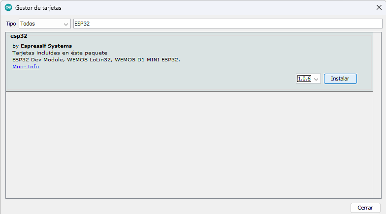
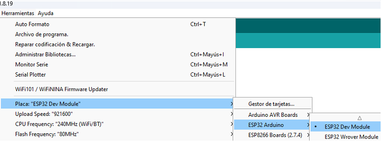
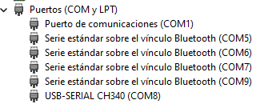

ESP32

Primeros pasos
Seguramente recientemente adquiriste o piensas adquirir una ESP32 y no sabes por donde empezar. En este post te voy a mostrar como instalar el entorno de desarrollo y como hacer tu primer programa.
¿Qué es una ESP32?
¿Cómo programarla desde el Arduino IDE?
El primer paso es abrir el IDE de Arduino, posteriormente ir a la opción de preferencias dentro de la pestaña Archivo y agregar la siguiente URL en la sección de “Gestor de URLs Adicionales para Tarjetas”:
https://dl.espressif.com/dl/package_esp32_index.json
En la pestaña Herramientas seleccionar la opción de Placa y luego Gestor de Tarjetas. Buscar la opción de ESP32 y luego instalarla.

Una vez instalado, seleccionar la opción de ESP32 Dev Module en la pestaña de Placa dentro de la pestaña Herramientas.

Primer programa
Para hacer nuestro primer programa, vamos a encender y apagar un led interno de la placa. Para esto escribimos el siguiente código en el IDE de Arduino:
void setup() {
pinMode(2, OUTPUT);
}
void loop() {
digitalWrite(2, HIGH);
delay(1000);
digitalWrite(2, LOW);
delay(1000);
}
Luego de compilar, conectamos nuestra placa a la computadora y seleccionamos el puerto en el que se encuentra conectada. En caso de no saber el puerto al que se encuentra, abrir el administrador de dispositivos y buscar USB-SERIAL CH340.

Finalmente, presionamos el botón de Subir y el programa se cargará en la placa.
En caso de que no se cargue el programa, verificar que la placa esté conectada correctamente y que el puerto seleccionado sea el correcto.
Nota: Para algunos modelos de ESP32, es necesario mantener el boton de Boot presionado mientras se carga el programa.
MultiWifi

Este ejemplo funciona para la placa de desarrollo NodeMCU ESP8266, el código se puede encontrar en los ejemplos de la IDE de Arduino al instalar el gestor de tarjetas ESP.
Después de hacer unos arreglos con la finalidad de encender el led integrado en la NodeMCU como indicador de que nuestra placa se ha conectado a internet, el código resulta de la siguiente manera.
#include < ESP8266WiFi.h >
#include < ESP8266WiFiMulti.h >
#define LED_BUILTIN 2
ESP8266WiFiMulti wifiMulti;
void setup() {
Serial.begin(115200);
WiFi.mode(WIFI_STA);
wifiMulti.addAP("ssid_from_AP_1", "your_password_for_AP_1");
wifiMulti.addAP("ssid_from_AP_2", "your_password_for_AP_2");
wifiMulti.addAP("ssid_from_AP_3", "your_password_for_AP_3");
pinMode(LED_BUILTIN, OUTPUT);
Serial.println("Connecting Wifi...");
if (wifiMulti.run() == WL_CONNECTED) {
Serial.println("");
Serial.println("WiFi connected");
Serial.println("IP address: ");
Serial.println(WiFi.localIP());
digitalWrite(LED_BUILTIN, LOW);
}
}
void loop() {
if (wifiMulti.run() != WL_CONNECTED) {
Serial.println("WiFi not connected!");
digitalWrite(LED_BUILTIN, LOW);
delay(1000);
digitalWrite(LED_BUILTIN, HIGH);
delay(1000);
}
else{
digitalWrite(LED_BUILTIN, LOW);
}
}
Y así podremos conectarnos a la red de diferentes sitios sin necesidad de cargar un código modificado
elements

Table of contents
Text
Some example text
Code
Python
def foo():
print ("This is a python function")
C/C++
void foo(){
prinf("%s\n", "This is a C function")
}
Bash
# This is a bash command
cd dir && echo $PWD;
# Return
exit 0;
Tables
| Pages |
Elements |
| 1 |
Text |
| 2 |
Code |
| 3 |
Tables |